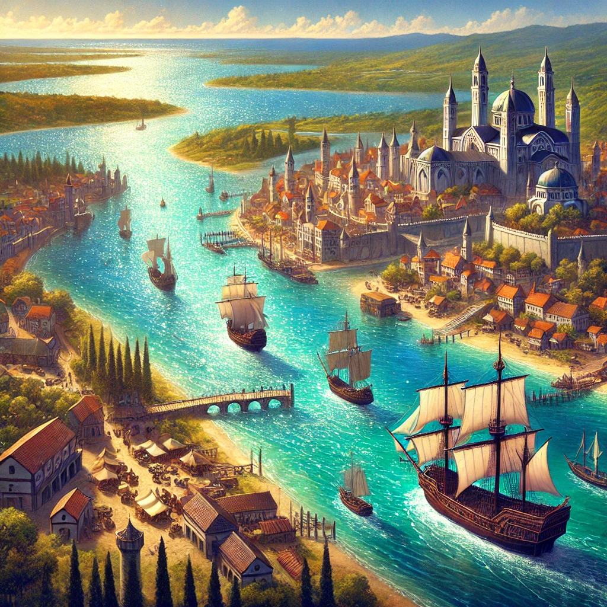

About Aquelia
Aquelia is the kingdom's hub of rivers and lakes, known for its vibrant trade routes and expertise in shipbuilding and pearl diving.
Key Counties
- County of Lagonis: A center of trade and shipbuilding.
- County of Selinor: Famous for its pearl-diving traditions.